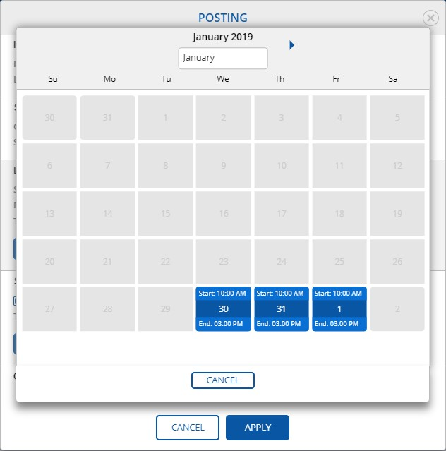

.
A doctor may require a professional in a different timetable. For this purpose, an application supports three options to select posting date and time:
- Simple. The most popular type of the posting in the application. Time of the beginning and ending the job is the same, if a posting lasts more than one day. Usually, this type of posting is used if a doctor needs a professional for one day or for a number of days if start and end of work is the same for all days.
- Weekly. A doctor specifies required a day of the week based on a week schedule. A doctor specifies start and end time of posting for every day of a week. Usually, weekly posting is used if a doctor needs a professional for some days of the week for one or more weeks and start and end time of work can be different from day to day.
- Complex. Usually, complex posting is used if a doctor needs a professional for more than one day and simple and weekly patterns cannot be applied.
-
Note: Professional can apply on assignments with 10 minutes interval.
-
Note: Professional can apply for the same day only once, within one job posting. Attempts to apply for the same day in other job postings should be considered collisions and declined by validation rules.
-
Note: If a Professional accepts the job offer, other professionals who also applied for the job posting and get no invitation, are notified about the fact that posting is closed.
-
Note: If a Professional rejects the invitation, other professionals who also applied for the job posting and got no invitation, now are notified that they can re-apply for the job posting.
-
Note: Professional who rejected the invitation, is able to re-apply for the same job posting.
-
Click SHOW IN CALENDAR button in the Dates
required for the job section.

If Dates required for the job are more than one, it looks like:

Note: SHOW IN CALENDAR dialog in the Dates required for the job shows only dates and time (start, end). A professional cannot select at this dialog any options.or SHOW IN CALENDAR button in the Selection Dates section.
 Note: Please select dates when you are NOT available for a job.
Note: Please select dates when you are NOT available for a job.For example, a professional would like to select two days: Jan-30 and Jan-31 only and NOT available for the third day: Feb-01. In that case, a user should check one day: Feb-01.

- A professional has applied for the job.
- A posting has status You have applied.